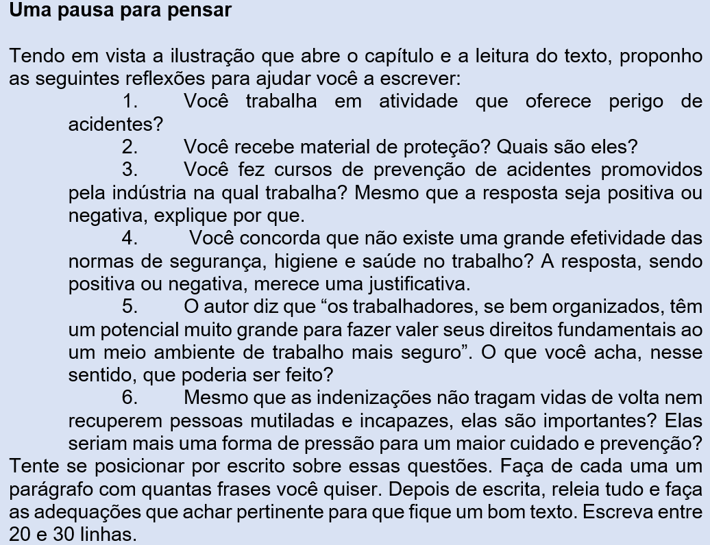

Capítulo 3: Prevenção de acidentes na indústria metalúrgica
Questão-problema:
Como está a prevenção de acidentes na indústria metalúrgica? Você sabia que os acidentes de trabalho ainda são um grande problema no Brasil?
(Fonte: https://pt.slideshare.net/EvandroPFonseca/dicas-de-preveno-10136320)
Acidentes de trabalho são uma grande problema no Brasil
(Raimundo Simão de Melo – adaptado)
A Constituição Federal, no artigo 7° e inciso XXII, prega que “São direitos dos trabalhadores urbanos e rurais (...) a redução dos riscos inerentes ao trabalho, por meio de normas de saúde, higiene e segurança”. O Estado, portanto, deve atuar para garantir a saúde e a segurança dos empregados nos ambientes de trabalho, mas, lamentavelmente, não vem fazendo a contento essa obrigação legal e social. É por isso que ainda acontecem acidentes e doenças do trabalho no Brasil. São mais de 700 mil eventos por ano, o que coloca o Brasil mais ou menos no 10° lugar no ranking mundial. Quer dizer, então, que não existe uma grande efetividade das normas de segurança, higiene e saúde no trabalho. As causas disso tudo podem ser resumidas no seguinte: falta de conscientização de todos os lados – dos trabalhadores, empregadores, sindicatos e do próprio Estado. Não há uma fiscalização eficiente para orientar os empregadores e aplicar as penalidades previstas na lei. O Ministério do Trabalho, que é o principal órgão fiscalizador, está "quebrado”, sem estrutura material e humana para atuar nesse campo das relações de trabalho. Com isso, muitos empregadores não cumprem corretamente as normas básicas de saúde, higiene e segurança no trabalho e o resultado são os inúmeros acidentes que acontecem. Os trabalhadores, todavia, se bem organizados, têm um potencial muito grande para fazer valer seus direitos fundamentais ao um meio ambiente de trabalho mais seguro. O Estado nunca fez uma campanha séria sobre prevenção de acidentes de trabalho, como lhe incumbe, na forma da lei, e ainda existe uma distância muito grande entre os órgãos públicos e os particulares — empregados e empregadores — no campo da prevenção dos acidentes de trabalho. No geral, o que começa a chamar a atenção são as indenizações de natureza civil, aplicadas pelos juízes do trabalho: em determinados casos podem ocorrer condenações por danos material, moral, estético e pela perda de uma chance de trabalho na vida do trabalhador. É certo, porém, que as indenizações não trazem vidas de volta nem recuperam pessoas mutiladas e incapazes muitas vezes para os atos mais simples da vida. Então, o melhor é prevenir e não remediar.
(Disponível em: http://www.conjur.com.br/2014-ago-22/falta-prevencao-ainda-causa-acidentes-trabalho. (adaptado))

Reconstruindo conhecimentos:
O texto que lhe ofereço na continuação do nosso trabalho é um conto que traz as personagens Preta seus filhos, mostrando a realidade dura que, infelizmente, ainda existe no nosso Brasil.
Não se fia
(Fernando Borges)
O bolicho, tosca meia-água mui gasta pelos anos, estava às moscas. O sol, boca de fornalha em pleno janeiro, de torrar aguapé em banhado. E o Quesica ali, braços apoiados sobre o balcão, num meio cochilo, aguardando um improvável freguês.
Em meio essa modorra, ela foi chegando. Silenciosamente. Levantando uma nuvenzinha de poeira de seus pés, enquanto que, do alto, quase estático, em monótonos círculos, um gavião a observava.
Entrou, humildemente, pedindo licença, secundada por uns vultinhos, barrigudos, de olhos bem arregalados, sua prole miúda. O bolicheiro apeou de sua sonolência, pigarreou, soltou uma cusparada pela janela lateral da venda e preparou-se para a ladainha de sempre do pobrerio.
Era preta. E magra, muito magra. Como seus sonhos. Como a felicidade em sua vida. Vivia à beira do corredor, num rancho de barro e santa-fé, já meio destruído pelo uso, testemunha de muita necessidade. Filhos tinha uma penca. Cinco, dos vivos. Em escadinha, como diziam. Sobrevivia de lavados pras casas dos grandes. E tinha o Jaci, seu eventual companheiro. Bom homem. Changueador ativo, especial para todo o serviço. E assim iam levando a existência, com muito suor, lágrimas e tomara-deus. As coisas pioraram, porém, quando o seu homem, numa doma, levou uma rodada e quebrou o pescoço. Então ficou só, muito só, acompanhada apenas de uma miséria ainda maior.
Os pretinhos ficaram sentados num banco, próximo à porta do bolicho, obcecados em olhar para um vidro cheio de caramelos sobre a prateleira. Apenas Nica, a mais velha, acompanhou-a até o balcão.
̶ Buenas, seu Quesica, como le vai?
̶ Buenas, Preta, que tal?
̶ O senhor me fia meio quilo de arrois e um punhado de torresmo pra engrossá a boia? Depois, quando recebê dos lavado, le pago.
O bolicheiro coçou a barba com raiva, espantou o gato que se aboletara sobre uma saca de feijão e ficou a remanchar, lavando copo limpo. Passaram-se uns instantes. As moscas voavam em redemoinho pelo balcão, na disputa de algum grão de alimento ali deixado. Preta e os filhos aguardavam. Os pequenos no banco, ainda hipnotizados pelos doces coloridos. E o velho a irritar-se cada vez mais. Consigo, com a negralhada pobre, com o mundo. Por fim, decidiu-se:
̶ Não dá, Preta, ocê já me deve bastantinho e eu tô mal de plata. Perciso de dinheiro pra pagá o Caturrita que vem do povo com umas encomenda. Otro dia, talveis.
Preta ficou imobilizada na sua pobreza, em seu desespero. Quinha, o menor, choromingou, protestando fome. O gato foi enxotado de outra saca, e as moscas seguiam seu carrossel. O velho, então, teve uma ideia:
̶ Bueno, ocê pode levá o que percisa e também o que me deve fica liquidado. Em troca, quero a guria, de papel passado, pra ajudá a veia no serviço.
Ao ouvir a proposta, Preta sentiu um calafrio. Instintivamente olhou para sua pretinha e apertou-a contra si. Passado esse instante, porém, a razão, pouco a pouco começou a gritar-lhe a dura realidade de sua vida, e a oferta do bolicheiro passou a ser-lhe dolorosamente aceitável.
Nica cravou os olhos no chão, sem ousar erguê-los, assustada. Mal e mal compreendia a conversa, mas ela a inquietava. Trincou os dentes para não chorar.
̶ Bueno, entonces o senhor me dá arrois, feijão, charque, café, açúcar e uns metros de chita. E le dê um purganti que ela tá botando solitária, falou, num sofrenaço.
Longe, ouvia-se o gemido dolente de um carro de bois. No campo, a animalada, assoleada, protegia-se do mormaço sob o arvoredo. Um vento morno começou a levantar poeira da estradinha. E Preta seguia, alma doída, com o resto da ninhada. Magra, muito magra. Como seus sonhos. Como a felicidade em sua vida.
Vamos conversar sobre o conto Não se fia?
1. Temos nessa história vários personagens. Quais seriam os principais e quais os secundários?
2. Observe que o nome deles – substantivos próprios – ou provêm de adjetivo (Preta) ou são apelidos derivados de outros nomes (Nica, Quinha, Quesica), ou apelidos de animais (Caturrita). O único a ter nome oficial é o Jaci, companheiro morto de Preta. O que pode representar tudo isso na história?
3. É facílimo comprovar que Preta e seus filhos são extremamente pobres. Mas e o Quesica, como você o classifica?
4. A atitude do bolicheiro em relação à Nica, como você a julga? E a aceitação de Preta?
5. No conto é dito que Nica é a mais velha da prole. Quantos anos você acha que ela tem? Por quê?
6. No conto também é dito que Preta tinha uma penca de filhos. Em outro momento é usado “ninhada”. A palavra “penca” significa, literalmente, o coletivo de bananas, e ninhada, o coletivo de bichinhos. Portanto, ela foi usada conotativamente. Qual a intenção do autor ao fazer isso?
7. Observe que há vários círculos neste conto: “do alto, quase estático, em monótonos círculos, um gavião a observava”; “as moscas voavam em redemoinho pelo balcão”; “moscas seguiam seu carrossel”; o gato que o Quesica enxota de uma saca à outra também faz um movimento circular e, por fim, quando Preta chega no bolicho e quando ela vai embora, o autor usa a mesma expressão: “Magra, muito magra. Como seus sonhos. Como a felicidade em sua vida”. Explique qual é o significado disso tudo para você.
8. O enredo da história acontece no verão. Como sabemos?
9. Se fosse para marcar no mapa do Brasil o lugar que acontece a história, você marcaria onde?
10. O calor do espaço (exterior) narrativo é muito forte. Quais a expressões usadas?
11. Os sonhos de Preta são mesmo muito pequenos. Quais são eles?
12. A linguagem usada pelos protagonistas da história é também reveladora de sua cultura popular. Procure escrever, em língua padrão as seguintes expressões:
a) ̶ Buenas, seu Quesica, como le vai?
b) ̶ Buenas, Preta, que tal?
c) ̶ O senhor me fia meio quilo de arrois e um punhado de torresmo pra engrossá a boi a? Depois, quando recebê dos lavado, le pago.
d) ̶ Não dá, Preta, ocê já me deve bastantinho e eu tô mal de plata. Perciso de dinheiro pra pagá o Caturrita que vem do povo com umas encomenda. Otro dia, talveis.
e) ̶ Bueno, ocê pode levá o que percisa e também o que me deve fica liquidado. Em troca, quero a guria, de papel passado, pra ajudá a veia no serviço.
f) ̶ Bueno, entonces o senhor me dá arrois, feijão, charque, café, açúcar e uns metros de chita. E le dê um purganti que ela tá botando solitária.
Você já pensou sobre isso?
A diversidade linguística é uma característica de todas as línguas – e não seria diferente na língua portuguesa.
[INSERIR VIDEOS SESI EDUCA]
227_LP_ENS_FUN_F9_11_ET
228_LP_ENS_FUN_F09_12_AT
Os diálogos e o uso do travessão
Você deve ter reparado, no conto Não se fia, que quando a Preta conversa com o Quesica (e este com ela) há uma marca, um traço ( ̶ ), chamado travessão, um sinal que serve para marcar a fala ora da Preta, ora do Quesica.
O travessão é colocado sempre antes da fala, para marcar a mudança de interlocutor.
Ele é importante, porque a fala pode ser bem diferente do estilo do narrador, como vimos no conto de Fernando Borges. Exemplo:
“O velho, então, teve uma ideia:
̶ Bueno, ocê pode levá o que percisa e também o que me deve fica liquidado.”
A gente percebe quando é a escrita do narrador e quando é a fala da personagem.
Praticando:
No texto a seguir, coloque o sinal de travessão onde há fala das personagens:
Fuga
(Fernando Sabino)
Mal o pai colocou o papel na máquina, o menino começou a empurrar uma cadeira pela sala, fazendo um barulho infernal.
Para com esse barulho, meu filho – falou, sem se voltar.
Com três anos já sabia reagir como homem ao impacto das grandes injustiças paternas: não estava fazendo barulho, estava só empurrando uma cadeira.
Pois então para de empurrar a cadeira.
Eu vou embora – foi a resposta.
Distraído, o pai não reparou que ele juntava ação às palavras, no ato de juntar do chão suas coisinhas, enrolando-as num pedaço de pano. Era a sua bagagem: um caminhão de plástico com apenas três rodas, um resto de biscoito, uma chave (onde diabo meteram a chave da dispensa? – a mãe mais tarde irá dizer), metade de uma tesourinha enferrujada, sua única arma para a grande aventura, um botão amarrado num barbante.
A calma que baixou então na sala era vagamente inquietante. De repente, o pai olhou ao redor e não viu o menino. Deu com a porta da rua aberta, correu até o portão:
Viu um menino saindo desta casa? – gritou para o operário que descansava diante da obra do outro lado da rua, sentado no meio-fio.
Saiu agora mesmo com uma trouxinha – informou ele.
Correu até a esquina e teve tempo de vê-lo ao longe, caminhando cabisbaixo ao longo do muro. A trouxa, arrastada no chão, ia deixando pelo caminho alguns de seus pertences: o botão, o pedaço de biscoito e – saíra de casa prevenido – uma moeda de 1 real. Chamou-o, mas ele apertou o passinho, abriu a correr em direção à Avenida, como disposto a atirar-se diante do ônibus que surgia a distância.
Meu filho, cuidado!
O ônibus deu uma freada brusca, uma guinada para a esquerda, os pneus cantaram no asfalto. O menino, assustado, arrepiou carreira. O pai precipitou-se e o arrebanhou com o braço como a um animalzinho:
Que susto que você me passou meu filho – e apertava-o contra o peito, comovido.
Deixa eu descer, papai. Você está me machucando.
Irresoluto, o pai pensava agora se não seria o caso de lhe dar umas palmadas:
Machucando, é? Fazer uma coisa dessas com seu pai.
Me larga. Eu quero ir embora.
Trouxe-o para casa e o largou novamente na sala – tendo antes o cuidado de fechar a porta da rua e retirar a chave, como ele fizera com a da dispensa.
Fique aí quietinho, está ouvindo? Papai está trabalhando.
Fico, mas vou empurrar esta cadeira.
E o barulho recomeçou.
(Fonte: SABINO, Fernando. Para Gostar de Ler. Volume 2 – Crônicas. São Paulo: Ática, 1988.)
O que aprendi:
- Uso do travessão: sempre antes da fala, para marcar a mudança de interlocutor. Ele é importante, porque a fala pode ser bem diferente do estilo do narrador.
- Os travessões também são utilizados para substituir os parênteses, realçando alguma parte do texto.